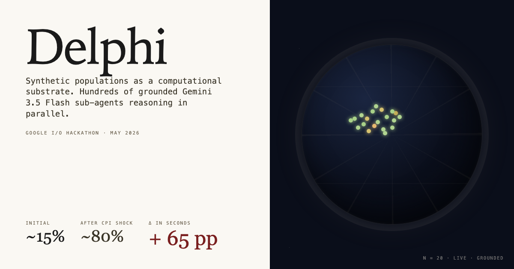
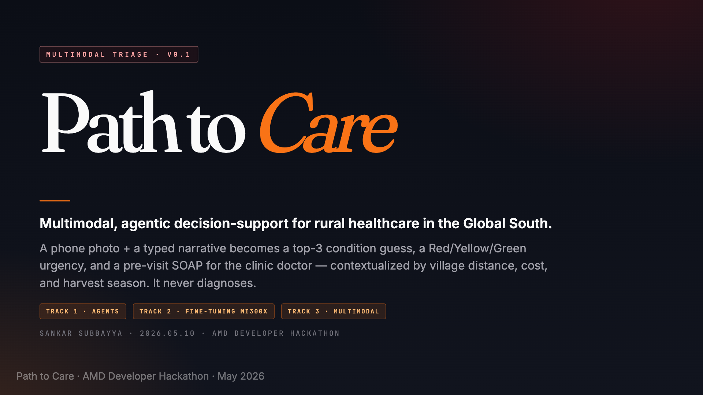
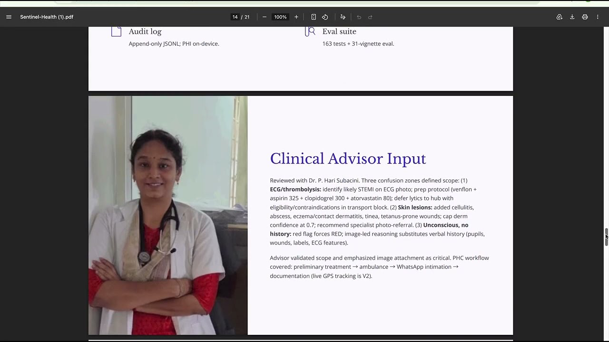

AI for the moments
that actually matter.
I build open-source AI for healthcare access, enterprise governance, and clinical decision-support. Each project ships with its adversarially-authored eval, its deterministic safety net, and its full source — because the claim doesn't count if you can't reproduce it.
Full project portfolio at accurateai.org.
About
Sankaranarayanan Subbayya is a veteran AI Engineer and Architect specializing in Generative AI, multi-agent orchestration, and autonomous systems. With over 15 years of experience building and scaling machine learning infrastructure, he focuses on designing robust semantic search architectures, large-scale Retrieval-Augmented Generation (RAG) pipelines, and intelligent agentic workflows. Sankaranarayanan has driven technical strategy and engineering execution across cutting-edge AI startups and complex cloud environments, with a deep emphasis on production-grade GenAI development platforms.
He holds a Ph.D. in Ocean Engineering from the University of Rhode Island and is based in the San Francisco Bay Area.
Selected work

Synthetic populations as a computational substrate. Dozens of Gemini 3.5 Flash sub-agents, each role-playing a different American persona generated from US Census demographics and grounded in live web, reason about any question in parallel. ~60 seconds to a probabilistic forecast, reasons for and against, demographic split, and an outlier quote — synthesized into a WSJ-style summary by a final Gemini call. Live-demoed with a sixty-percentage-point swing on one news shock.

Multimodal triage decision-support for rural healthcare in the Global South. Phone photo + typed narrative → top-3 conditions, Red/Yellow/Green urgency, structured pre-visit SOAP, and patient framing in the patient's own ₹ and km. Built in 24 hours on a single AMD Instinct MI300X. Never diagnoses.

Offline triage for community health workers in low-resource settings. Multimodal Gemma 4 + deterministic safety layer + WhatsApp handoff to the hub physician — runs entirely on a clinic laptop, no internet. Scoped to five grassroots emergencies: trauma, poisoning, snake bite, MI, stroke.

Governance plane for enterprise AI agents. Gates every tool call, signs the audit trail with hash-chained HMAC, meters per-BU spend. Built on Gemini 2.5 Flash + Pro with Cached Content over full policy documents. The control plane between agentic pilots and production.
How I work
Four projects, one posture: AI that names its own limits.
Path to Care never produces a diagnosis. Sentinel Health never overrides a red flag. Agent Sentinel never lets a model bypass its policy gate. Delphi never claims certainty without showing where its personas disagreed. The safety layer is code, not a disclaimer.
Every project ships an adversarially-authored test set and a measurable safety target — zero false-negatives on Red triage for Path to Care, zero unauthorized tool calls for Agent Sentinel, reproducible demographic-divergence reporting for Delphi — plus a single-command demo. If you can't reproduce the claim on the repo, the claim doesn't count.
Contact
For collaborations on clinical decision-support, agent governance, or applied GenAI infrastructure, reach me on LinkedIn.